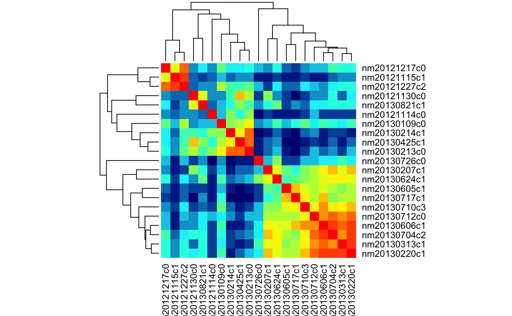
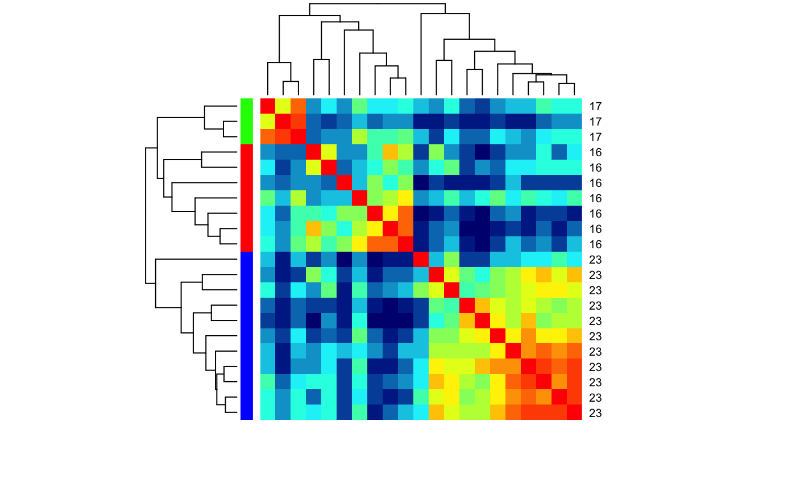
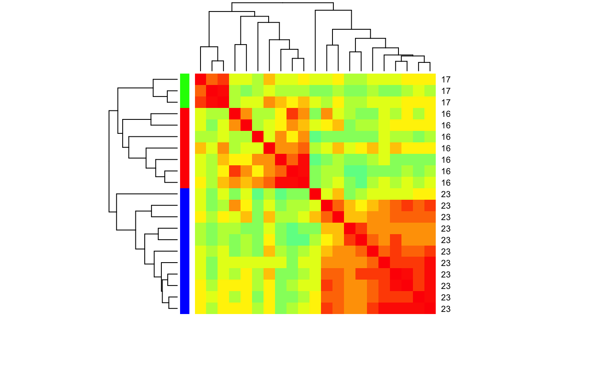

R/heatmap.R
heatmap_cor_dist.Rdspike_cor_dist calculate the cross-correlation between
the spike responses of a set of cells. It is called by
heatmap_cor_dist but you may wish to use this data directly.
heatmap_cor_dist(cells, odours, col = jet.colors(20), labRow = NULL, labCol = NULL, ColSideColors, RowSideColors, heatmapfun = heatmap, ...) spike_cor_dist(cells, odours)
| cells | Character specifying cells to plot OR a data.frame containing information about those cells |
|---|---|
| odours | Character vector specifying odours to plot |
| col | Character vector of colour levels generated by a colour palette
function such as |
| labRow | character vectors with row and column labels to
use; these default to |
| labCol | character vectors with column labels to use; defaults to cells. |
| ColSideColors | (optional) character vector of length |
| RowSideColors | (optional) character vector of length |
| heatmapfun | Which heatmap function to use. There are many besides the
default |
| ... | Additional parameters passed to |
# Find LHNs with Anatomy.type 4 and ephys class 16,17,23 for which we have # spiking response data physplit.c161723=subset(PhySplitDB, cell%in% names(Spikes) & Anatomy.type==4 & class%in%c(16,17,23)) heatmap_cor_dist(physplit.c161723)# repeat but with class information heatmap_cor_dist(physplit.c161723, labRow=physplit.c161723$class, labCol=NA, RowSideColors=rainbow(3)[factor(physplit.c161723$class)])# Same but set limit for the palette heatmap_cor_dist(physplit.c161723, labRow=physplit.c161723$class, labCol=NA, RowSideColors=rainbow(3)[factor(physplit.c161723$class)], zlim=c(-1,1))## use heatmap.2# NOT RUN { library(gplots) heatmap_cor_dist(physplit.c161723, heatmapfun=heatmap.2) # }